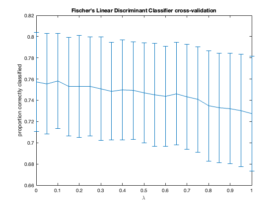

Contents
clear; close all; clc;
a)
load('fisherData.mat')
mean_data1 = mean(data1);
mean_data2 = mean(data2);
w = mean_data2 - mean_data1;
w_norm = sqrt(sum(w.^2));
w_hat = w./w_norm;
midpoint_data = (mean_data1 + mean_data2)/2;
figure();
scatter(data1(:, 1), data1(:, 2), 'b*', 'DisplayName', 'dog vocalizations');
hold on;
scatter(data2(:, 1), data2(:, 2), 'ro', 'DisplayName', 'cat vocalizations');
plot([midpoint_data(1) - w_hat(1)/2, midpoint_data(1) + w_hat(1)/2], ...
[midpoint_data(2) - w_hat(2)/2, midpoint_data(2) + w_hat(2)/2], ...
'm-', 'DisplayName', 'w hat', 'LineWidth', 1.5)
axis equal;
x_dec_boundary = xlim;
y_dec_boundary = decision_boundary(x_dec_boundary, midpoint_data, w_hat);
plot(x_dec_boundary, y_dec_boundary, 'k-', 'LineWidth', 2, ...
'DisplayName', 'boundary')
set(gca, 'FontSize', 14)
set(gca, 'LineWidth', 2)
xlim(x_dec_boundary)
title('Prototype Classifier')
legend('Location', 'northeastoutside');
frac_correctly_classified = classification_performance(data1, ...
data2, x_dec_boundary, y_dec_boundary, w_hat)
frac_correctly_classified =
0.7357
b)
cov_data1 = cov(data1); cov_data2 = cov(data2);
cov_combined = (cov_data1 + cov_data2)/2;
w_hat_fisch = cov_combined \ w';
figure();
scatter(data1(:, 1), data1(:, 2), 'b*', 'DisplayName', 'dog vocalizations');
hold on;
scatter(data2(:, 1), data2(:, 2), 'ro', 'DisplayName', 'cat vocalizations');
plot([midpoint_data(1) - w_hat_fisch(1)/2, midpoint_data(1) + w_hat_fisch(1)/2], ...
[midpoint_data(2) - w_hat_fisch(2)/2, midpoint_data(2) + w_hat_fisch(2)/2], ...
'm-', 'DisplayName', 'w hat', 'LineWidth', 1.5)
axis equal;
x_dec_boundary = xlim;
y_dec_boundary = decision_boundary(x_dec_boundary, midpoint_data, w_hat_fisch);
plot(x_dec_boundary, y_dec_boundary, 'k-', 'LineWidth', 2, ...
'DisplayName', 'boundary')
set(gca, 'FontSize', 14)
set(gca, 'LineWidth', 2)
xlim(x_dec_boundary)
title("Fischer's Linear Discriminant Classifier")
legend('Location', 'northeastoutside')
frac_correctly_classified = classification_performance(data1, ...
data2, x_dec_boundary, y_dec_boundary, w_hat_fisch)
frac_correctly_classified =
0.7571

c)
lambdas = 0:0.05:1;
runs = 1e3;
train_size = floor(0.95 * size(data1, 1));
frac_correctly_classified_cv = zeros(length(lambdas), runs);
for run = 1:runs
for ll = 1:length(lambdas)
lambda = lambdas(ll);
train1_indices = randperm(size(data1, 1), train_size);
test1_indices = setdiff(1:size(data1, 1), train1_indices);
train2_indices = randperm(size(data2, 1), train_size);
test2_indices = setdiff(1:size(data2, 1), train2_indices);
train1 = data1(train1_indices, :);
train2 = data2(train2_indices, :);
test1 = data1(test1_indices, :);
test2 = data2(test2_indices, :);
mean_train1 = mean(train1);
mean_train2 = mean(train2);
w = mean_train2 - mean_train1;
w = w./sqrt(sum(w.^2));
midpoint_train = (mean_train1 + mean_train2)/2;
cov_train1 = cov(train1); cov_train2 = cov(train2);
cov_combined = (cov_train1 + cov_train2)/2;
cov_estimated = (1 - lambda) .* cov_combined + lambda .* eye(2);
w_hat_estim = cov_estimated \ w';
x_dec_boundary = xlim;
y_dec_boundary = decision_boundary(x_dec_boundary, midpoint_train, ...
w_hat_estim);
frac_correctly_classified_cv(ll, run) = classification_performance(test1, ...
test2, x_dec_boundary, y_dec_boundary, w_hat_estim);
end
end
frac_correctly_classified_mean = mean(frac_correctly_classified_cv, 2);
frac_correctly_classified_stderror = std(frac_correctly_classified_cv, 0, 2)...
./sqrt(size(frac_correctly_classified_mean, 1));
figure()
errorbar(lambdas, frac_correctly_classified_mean, frac_correctly_classified_stderror)
xlabel('\lambda')
ylabel('proportion correctly classified')
title("Fischer's Linear Discriminant Classifier cross-validation")

d)
figure();
scatter(data1(:, 1), data1(:, 2), 'b*', 'DisplayName', 'dog vocalizations');
hold on;
scatter(data2(:, 1), data2(:, 2), 'ro', 'DisplayName', 'cat vocalizations');
xx_ = xlim;
yy_ = ylim;
pps = 4*1e2;
xx = linspace(xx_(1), xx_(2), pps);
yy = linspace(yy_(1), yy_(2), pps);
[X, Y] = meshgrid(xx, yy);
XY = [X(:) Y(:)];
p1 = mvnpdf(XY, mean_data1, cov_data1);
p2 = mvnpdf(XY, mean_data2, cov_data2);
diff_p = p1 - p2;
scatter(XY(:, 1), XY(:, 2), [], diff_p, 'MarkerFaceAlpha', 0.2, ...
'MarkerEdgeAlpha', 0.2)
dec_x = zeros(length(diff_p), 1);
dec_y = zeros(length(diff_p), 1);
for i = 1:length(diff_p)
if diff_p(i) <= 0.01
dec_x(i) = XY(i, 1);
dec_y(i) = XY(i, 2);
end
end
plot(dec_x, dec_y, 'k*')

p1_data1 = mvnpdf(data1, mean_data1, cov_data1);
p2_data1 = mvnpdf(data1, mean_data2, cov_data2);
p1_data2 = mvnpdf(data2, mean_data1, cov_data2);
p2_data2 = mvnpdf(data2, mean_data2, cov_data2);
correct_data1 = sum(p1_data1 > p2_data1);
correct_data2 = sum(p2_data2 > p1_data2);
frac_correctly_classified = (correct_data1 + correct_data2)./...
(2 * size(data1, 1))
frac_correctly_classified =
0.8143
function samples = nRandn(mean, cov, num)
N = length(mean);
[V, D] = eig(cov);
M = V * sqrt(D);
samp = randn(num, N);
samples = repmat(mean, num , 1) + samp * M';
end
function y_dec_boundary = decision_boundary(x_dec_boundary, ...
midpoint_data, w_hat)
dec_boundary_slope = -(w_hat(1))/(w_hat(2));
y_dec_boundary(1) = midpoint_data(2) + dec_boundary_slope * ...
(x_dec_boundary(1) - midpoint_data(1));
y_dec_boundary(2) = midpoint_data(2) + dec_boundary_slope * ...
(x_dec_boundary(2) - midpoint_data(1));
end
function frac_correctly_classified = classification_performance(data1, ...
data2, x_dec_boundary, y_dec_boundary, w_hat)
dec_boundary_slope = -(w_hat(1))/(w_hat(2));
x_ones = ones(size(data1(:, 1))) .* x_dec_boundary(1);
y_ones = ones(size(data1(:, 1))) .* y_dec_boundary(1);
y_data1 = y_ones + dec_boundary_slope * (data1(:, 1) - x_ones);
y_data2 = y_ones + dec_boundary_slope * (data2(:, 1) - x_ones);
correct_data1 = sum(y_data1 >= data1(:, 2));
correct_data2 = sum(y_data2 <= data2(:, 2));
frac_correctly_classified = (correct_data1 + correct_data2)./...
(2 * size(data1, 1));
end